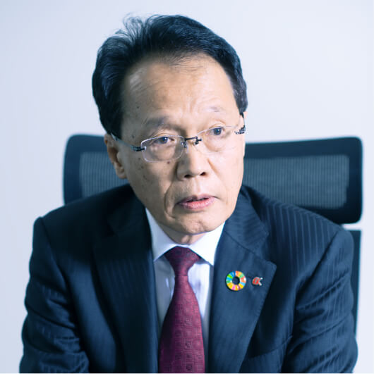

パートナーシップで
「社会に認められる企業」へ
─ 岸：「社会・環境」に関する取り組みについてお聞かせください。この重要課題のために、先ほども少しお話されていましたが、組織体制を大きく変更されたそうですね。
─ 前田：昨年7月から本部制への移行などの抜本的改革を行い、環境・再生可能エネルギー関連事業に取り組む専門部署である「環境・再生エネルギー部」を立ち上げています。当社は10年前から排水処理技術を活かして環境保全のための事業を展開していたのですが、この取り組みを本格化するために、「部」として独立させました。また、再生可能エネルギーについては当社の強みである海上土木・陸上土木・建築の豊富な施工実績を活かし、バイオマス発電事業・太陽光発電事業・養殖事業・廃棄物処理事業へ積極的に参画していく予定です。
─ 岸：注目度が高まっている洋上風力発電事業についてはいかがでしょうか。
─ 前田：基地港湾の整備事業に取り組むため、地元企業様との協業を模索しています。当社の株主である今治造船様、JX金属様、JFE商事様、東邦チタニウム様などと連携しながら取り組みを強化し、当社の事業における一つの柱にしたいと考えています。
─ 岸：SDGsの目標17は「パートナーシップで目標を達成しよう」ですが、まさにこれを他社や「地域」との連携で実現していくわけですね。理想的な取り組み方だと思います。ここで「地域」についてもお話を伺いたいのですが、御社はJリーグ加盟のサッカークラブである「FC今治」のエグゼクティブパートナーになり、新スタジアムの施工にかかわっていますね。
─ 前田：工事名称は「今治・夢ビレッジ里山スタジアム整備工事」です。数年前、私が東京建築支店長の頃にお話をいただきました。「サッカーの試合日はもちろん、365日の賑わいを創出する仕掛けをふんだんに盛り込んだ地域や自然環境と連携し循環しながら成長し続ける何世代にも渡って地域の人々に愛される今までにないサッカースタジアム」がコンセプトです。
─ 岸：イメージスケッチを拝見したのですが、自然と調和した美しいスタジアムだと思いました。

─ 前田：そうですね。FC今治の岡田武史会長は、サッカーの試合がない日もお客さまで賑わうスタジアムにするにはどうしたらいいかを常に考え、サッカーによる地域の活性化を目指されています。当社の理念にも合致する事業なので、お話をいただいてすぐ協力させていただくことを決断しました。ヨーロッパのスタジアムのような、周囲の環境を活かして自然と共存し年間を通して賑わいのある施設になることを目指しています。
─ 岸：この取り組み、大変共感できます。先ほど前田社長のお話に出た「社会に認められる企業」として、とても重要ですね。自然との共生という、日本人が大切にしている感覚にも通じる部分があります。建設が今後どのように未来をつくっていくか、そのヒントがここにあるのではないでしょうか。
教育と改革を通じて、
社員の想いを一つに
 今治・夢ビレッジ
今治・夢ビレッジ
里山スタジアム整備工事
© Imabari. Yume Village
─ 岸：「人」にかかわる重要課題への取り組みについてはいかがでしょうか？
─ 前田：社会に認められ必要とされる企業になるには、その企業が持つ技術などの資産を最大限に活かし継承していく必要がありますが、そのためには「必要人員の確保と育成」とともに「教育」が不可欠です。この取り組みを強化するために、2022年度から人事課を「部」に組織変更し増員もしました。技術の向上や継承のための教育だけでなく、現在の社会や環境の問題への理解・共感や、当社で働くことのモチベーション向上にも取り組む予定です。さまざまな改革をより積極的に進めるためにも、経営者も含めた「社員の意識改革」はとても重要です。
─ 岸：新しいチャレンジに意識改革は必要不可欠ですね。人間は、今までやってきたことを続けるのは得意ですが、新しいことに対しては身構えてしまって、なかなかチャレンジできないと言われていますから。
─ 前田：その通りです。そして、これが一番難しい課題だとも感じています。CSR推進課が中心となって社員にSDGs教育などを行っていますが、できるだけ早い時期に全社員が同じ想いのもとで仕事に取り組めるようにしたいと思います。この課題は中期経営計画にも基本方針の一つとして取り上げています。
─ 岸：社員教育という取り組みに、「技術の向上や継承」と「社会や環境の問題への理解・共感」、そして「働く上での意識改革」が含まれているわけですね。それでは、「働き方改革」についてはいかがでしょうか。
─ 前田：先ほども触れましたが、働き方の改善と効率化に取り組むため「業務改善委員会」と「働き方改革委員会」を新たに立ち上げました。業務の改善と働き方改革は密接に関係しており、働き方を改善していくには業務の改善が不可欠です。社会の急速な変化に対応し、これからの会社の「担い手」を確保していくためにも重要課題として取り組んでいます。
─ 岸：「担い手」とは、人材採用の問題でしょうか。
─ 前田：担い手の確保は業界全体の問題でもあります。新たな就労希望者が少なく高齢化が進んでいるため、技術の継承に必要な中間層が少ないのが現状です。建設技術を次世代にしっかり継承していくためにも、この問題には受発注者ともに業界として取り組む必要を強く感じています。
─ 岸：技術教育を行うにはかなりの時間が必要でしょうから、一刻を争いますね。
─ 前田：当社は現在、60歳定年で65歳まで雇用延長していますが、できるだけ早期に65歳定年・70歳までの雇用延長を実現して業務の改善と働き方改革を進め、社員に働きがいを持ってもらうことで担い手の確保につなげたいと思っています。

─ 岸：DX※3化やICT※4化にも積極的に取り組まれているそうですね。
─ 前田：業務効率化とコミュニケーション促進のために、ほぼ全社員にタブレット端末を配布しています。また、今後は業務改善への対応の一環として、近年発注者からも求められることが増えているBIM※5やCIM※6といったシステムの導入に対しても積極的に取り組みを強化しています。
※3 Digital Transformation（デジタルトランスフォーメーション）。テクノロジーによる産業構造の変容。進化したデジタル技術を普及・浸透させることで、人々の生活をより良いものへと変革すること。
※4 Information and Communication Technology（情報通信技術）。通信技術を活用したコミュニケーションで、ネットワークを活用して情報や知識を共有する技術のこと。
※5 Building Information Modeling。コンピューター上に作成した3次元の建物のデジタルモデルに、コスト・仕上げ・管理情報といった属性データを追加した、建築物のデータベース。建築の設計・施工から維持管理までのあらゆるプロセスで、高度な情報活用が可能になる。
※6 Construction Information Modeling。BIMを土木工事で活用できるようにしたシステム。